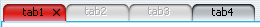
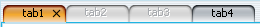
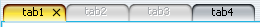
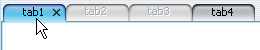
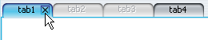
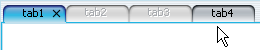
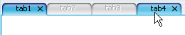
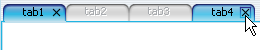

Pulsating loop on JTabbedPane - orange theme (midway through animation):
Pulsating loop on JTabbedPane - yellow theme (animation flex point):
In addition, the tabs can now have close buttons (like in NetBeans or SWT). Application should set SubstanceLookAndFeel.TABBED_PANE_CLOSE_BUTTONS_PROPERTY client property on either the tabbed pane's Component (if it's JComponent), JTabbedPane (for all tabs of that pane) or the UIManager (for all tabbed panes). The value that corresponds to tab with close button is Boolean.TRUE. In addition, there's rollover effect on enabled tabs (like on any other control such as buttons or scroll bars). See 45-second AVI movie (810 KB) illustrating the technique.
Close button on active tab in JTabbedPane - mouse over close button (includes mouse pointer):
Close button on inactive enabled tab in JTabbedPane - mouse not over tab (includes mouse pointer):
Close button on inactive enabled tab in JTabbedPane - mouse over tab but not over close button (includes mouse pointer):
Close button on inactive enabled tab in JTabbedPane - mouse over tab and over close button (includes mouse pointer):
This property can be set in three ways:JTabbedPane pane = new JTabbedPane(); JPanel component = new JPanel(); component.putClientProperty(SubstanceLookAndFeel.TABBED_PANE_CLOSE_BUTTONS_PROPERTY, Boolean.TRUE); pane.addTab(component); JPanel component2 = new JPanel(); // Will not have close button unless the tabbed pane itself specifies // Boolean.TRUE as value for its client property or UIManager.put is // called on this property with Boolean.TRUE pane.addTab(component2);Once again - the behaviour is not disruptive. If you don't specify this property anywhere, you will not have close buttons on your tabs. This will allow Java 6.0 applications that set custom tab header components to continue working correctly.